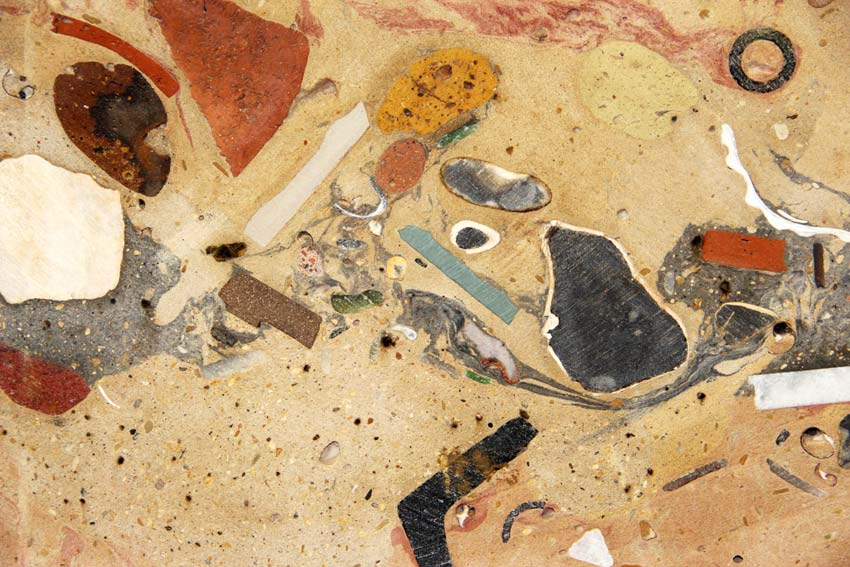
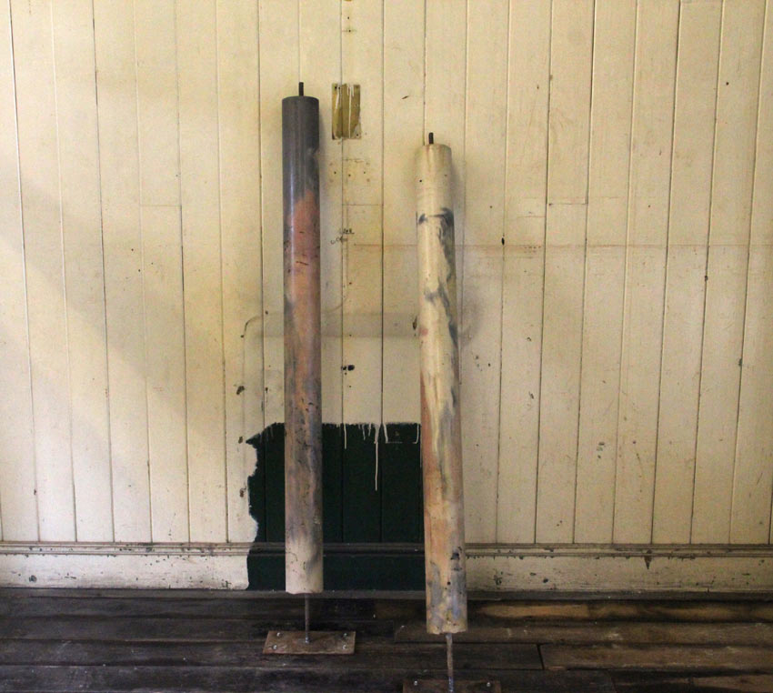
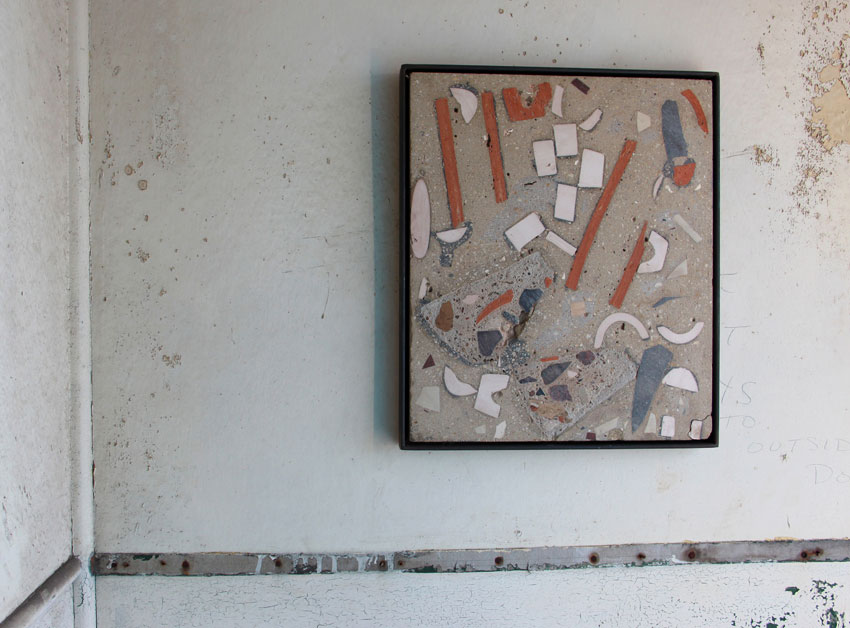

A River Once Ran Through My Veins / Points Of Departure / Estuary Festival
An installation at Tilbury Cruise Terminal as part of the inaugural Estuary Festival, curated by Metal.
“In the work of artist Liz Lake, found flotsam and jetsam are cast into concrete and sliced to reveal an invented geology with strata of landfill, concrete, aggregate and ash. A River Once Ran Through My Veins is an installation in a former Port of London Authority office at Tilbury Cruise Terminal which imagines a future where the estuary landscape has long since been swallowed by silt.”
Taken from ‘Martians, music and mud: how the Thames Estuary broadened cultural horizons’ by Rachel Lichtenstein, Guardian. Read full article here
More info on Research/Process

concrete, pigments, glass, shells, flint, snails, chalk, brick, landfill, steel I-beam
concrete, pigments, glass, shells, flint, snails, chalk, brick, landfill
concrete, pigments, ceramic, steel
concrete, pigments, steel
ceramic: black clay, stoneware, terracotta
concrete, ceramic, granite, steel
concrete, snails, spray paint
concrete, pigments, coal, ceramic, granite, sandstone, steel